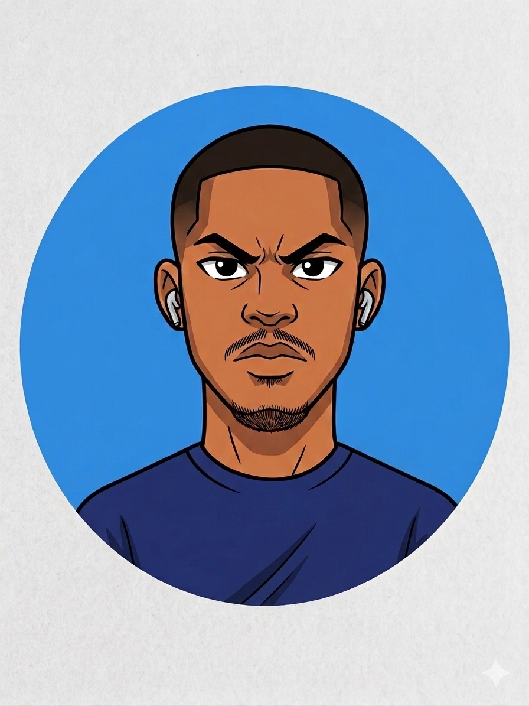

Hello World, I am
I build intelligent systems that turn manual workflows into smart, automated processes. Specializing in RAG pipelines, LLM-powered agents, and cloud infrastructure, I don't just call APIs—I engineer robust, production-grade solutions optimized for reliability, cost, and strict data governance.

Built to solve real enterprise bottlenecks.
What it is: A production-grade, stateful AI agent for competitive intelligence that solves the "brittle agent" problem. Unlike standard scripts that lose all context upon failure, this system checkpoints the agent’s memory to a Postgres/Supabase backend after every step, enabling instant, atomic resume-from-crash capabilities.
Enterprise Use Cases:
Key Challenges & Solutions:
An LLM-Gateway traffic controller. Before hitting APIs, user queries are embedded and checked against a Vector Store for semantic similarity. Features a PII scrubber to mask sensitive data before transmission, ensuring compliance.
A Human-in-the-Loop operations dashboard. Autonomous agents process tasks but write actions to a "Pending" database table rather than executing directly. A frontend allows operators to audit and "Approve" before final execution.
Independent Consulting • 2023 - Present
Engineered and deployed end-to-end software solutions with deep AI integrations. Specialized in moving beyond simple wrappers to build robust, production-grade AI infrastructure using autonomous agents.
Aurelius • 2023 - Present
Leading a multidisciplinary team defining the technical roadmap to advance healthcare through AI. Forming industry partnerships and ensuring compliance with research ethics.
BuildnRun • Feb 2023 - Dec 2023
Set overall strategic direction, managed daily startup operations, and built a high-performing team while securing funding and communicating with investors.
Hamoye.com • July 2021 - Oct 2021
Contributed to the development, modeling, testing, and deployment of ML models. Collaborated with data scientists to gather requirements for ML solutions.
Miva Open University • Expected Aug 2028
University of Calabar • 2020 - 2024
Focus on Front-End Web Development